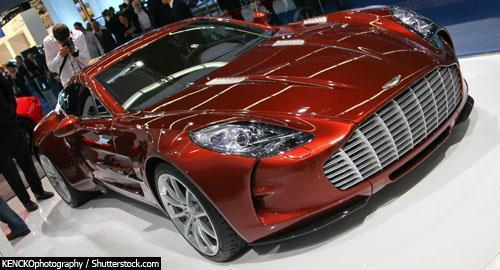

Glossário
The One-77, um carro esportivo de beleza incomparável com agressão sutil e desempenho desenvolvido em 2008 e 2009 com o objetivo de eclipsar qualquer carro de estrada Aston Martin anterior.
Segundo o site Autoblog, na publicação do dia 2 de outubro de 2008, às 9 e 25 minutos, a Aston Martin disse que teria uma "propriedade" em Paris, e na verdade isso aconteceu. O Aston Martin One-77 fez sua "estréia", mas teve que se aguardar um pouco mais para ver o super cupê de US $ 1.000.000 da montadora britânica.
A julgar pelos tiros de upskirt limitados em nossa galeria, o comprimento do One-77 ultrapassa facilmente o DB9 e o front-end estilizado, com faróis apagados, garante que o One-77 passará mais tempo nos confortáveis limites de aquecimento e As garagens acarpetadas, em seguida, na pista onde é 7.3 litros V12, monocoque de fibra de carbono e freios maciços serão colocados em bom uso.
O Aston Martin One-77 é um cupê fabricado pela Aston Martin. Ele apareceu pela primeira vez no Paris Motor Show 2008, porém o carro permaneceu parcialmente coberto, mostrando apenas uma pequena parte da lateral e da dianteira. O carro foi revelado totalmente no Salão de Genebra 2009. O coupe teve uma produção limitada de apenas 77 exemplares.
Com apenas 77 unidades fabricadas, o superesportivo da Aston Martin, possui motor V12 7.3 litros de 750 cavalos de potencia. O motor foi construído pela Cosworth, empresa que fabrica os motores das principais montadoras das equipes de Formula 1. Ela garante que esse é o carro aspirado mais poderoso do mundo. Ele faz de 0 a 100 km em apenas 3,5 segundos e pode atingir até 355 km/h. O carro exclusivo da Aston Martin foi revelado no salão de Paris em 2008, mas suas primeiras unidades foram entregues no inicio de 2011. Em 2012 foi vendido o último exemplar nos Estados Unidos por US$ 1.85 milhão.
O ÚLTIMO ASTON MARTIN

O mais exclusivo Aston Martin da "Era Gaydon", o One-77 foi limitado a 77 exemplos exclusivos.
Tantalizingly, o primeiro vislumbre do mundo do One-77 hypercar foi uma maquete do carro novo no 2008 Motor Motor Show, três quartos cobertos por uma capa de tecido cinza-stripe com apenas um vislumbre do lado direito da frente coyly peeping Fora.
A imagem completa foi revelada no Salão do Automóvel de Genebra de março de 2009, onde uma maquina azul metálica e um rolamento com todo o grupo motopropulsor estavam em exibição.
O louco poderoso e muito raro Aston Martin One-77 já esteve no olho público há algum tempo, depois de ter sido mostrado pela primeira vez na América do Norte no encantador Pebble Beach Concours d'Elegance. Como todos os produtos da Aston Martin, este é impressionante em todas as categorias, do estilo exterior ao poder. O que eles fizeram com theOne-77 é tecnologia avançada de fusíveis com um design deslumbrante para criar possivelmente a forma de arte automotiva mais desejável do mundo.
No entanto, como é o caminho com essas coisas, a maioria das pessoas no mundo nunca terá a chance de possuir ou mesmo dirigir um desses veículos. O primeiro motivo é o preço, que é - prepare-se para isso - US $ 1,4 milhão. Tudo bem, podemos vender tudo o que possuímos e trabalhar muito para os próximos 50 anos. No entanto, mesmo se você tiver o dinheiro, apenas 77 serão feitos, tornando assim bastante peculiar esta forma de arte automotiva.
Se interessado em comprar o One-77 ainda tem uma chance porque há dez unidades ainda disponíveis. Os potenciais clientes parecem hesitar devido ao fato de que não podem testar o investimento de US $ 1,4 milhão antes de comprá-lo. Parece razoável para nós.
Aston Martin revelou um novo vídeo que revela o supercarista One-77 em ação nas estradas da montanha francesa, a poucas milhas do famoso circuito Paul Ricard na França. Este vídeo mostra, aparentemente, os destaques da visita do veículo às montanhas. Apreciar!
Um dos carros mais velozes desse top 10, o Bugatti Chiron chega a ter 1.500 cv de potencia, mas esse AF10 promete impressionantes 2.108 cv de potencia. Um monstro sobre quatro rodas. Ele consegue isso com 4 motores elétricos (2 para cada eixo) e um motor V8 6.2 a combustão com compressor volumétrico. Com essa junção, o supercarro acelera de 0-96km/h em 2,8 segundos. Apesar de ser de uma montadora não muito conhecida, o carro desperta interesse para tecnologia hibrida nos superesportivos. É o carro britânico mais caro do mundo.
As coisas que importam - É uma cabine de lágrima sobre uma superfície plana. Alavanca traseira fixa e asa dianteira móvel para quando é necessário - grande velocidade. Com a cabine apertada, você poderia argumentar que o AF10 tem mais DNA de espaçonave do que carro.
Consiste em 5 partes, 4 motores e 1 motor a gasolina. No total, o sistema de tração da urdidura pesa 280 kg. Cada unidade de acionamento de dobra tem sua própria caixa de engrenagens, 2 velocidades para acionamentos elétricos e 6 velocidades para o motor a gasolina. Manual ou Paddle-shift.
Each of the 4 motors in the Warp Drive System are outputting
Desafie o Impossível
O McLaren Senna é a personificação do DNA da McLaren no seu extremo, criando a conexão mais pura entre o carro eo motorista. É o carro roteiro mais focado na via que já construímos e estabelecerá os tempos de volta mais rápidos de qualquer McLaren até à data. Isso é o que nos levou a construir um carro de trilhas que é sem vergonha sem compromisso. Um que é legalizado para uso rodoviário, mas não sanitizado para se adequar a ele. Nada além do que fazer a experiência de condução mais intensa em torno de um circuito.
Inspirado por um dos melhores pilotos de corrida da McLaren, o McLaren Senna é totalmente dedicado a permitir que o motorista seja o melhor possível.Se você não consegue esconder, abrace-o. Quando o dispositivo de segurança Halo foi mandatado para carros de Fórmula 1 este ano, muitos foram rápidos em desenhar paralelos com o aspecto excêntrico da estrutura e um sapato flip-flop. Agora, parece que a McLaren está na brincadeira, já que juntou forças com um fabricante de flip-flop.
Na próxima semana, os carros da McLaren apresentarão em seus halos um logotipo proeminente para o Gandys, uma marca de estilo de vida britânica conhecida por seus flip-flops. Há uma instituição de caridade envolvida, uma vez que 10 por cento dos lucros da Gandys vão para uma base de apoio aos órfãos chamada Orphans For Orphans; Os irmãos Forkan por trás da marca começaram Gandys depois de perder seus pais no tsunami do sudeste asiático de 2004. E não se trata apenas de um adesivo em um carro de corrida, já que a Gandys e a McLaren lançarão um modelo de flip-flop de "edição Halo" de uso limitado, com todos os lucros na base acima mencionada.
Performance
O McLaren Senna tem um propósito único. Na busca da experiência de condução mais gratificante e intuitiva, a aerodinâmica ativa pioneira gera níveis de força aerodinâmica sem precedentes. É também o veículo mais leve que construímos desde a F1 icônica, com nosso motor de estrada mais poderoso até à data. Esta combinação cria uma taxa de potência / peso surpreendente de 668PS por tonelada (659bhp). É o McLaren mais direto e responsivo já construído, superando mesmo o McLaren P1 ™ GTR, para criar a mais pura conexão com o driver. O McLaren Senna é um novo padrão de referência para a McLaren.
O motorista e o McLaren Senna como um só!
Fiel às habilidades lendárias de um dos melhores pilotos da McLaren, todos os elementos desta Série Ultimate têm um ethos de desempenho intransigente e um foco bruto que proporciona a mais pura conexão entre o driver e a McLaren Senna. Essa intensidade emocional e intuitiva vem da confiança. Da capacidade do motorista para se sentir conectado à experiência. Feedback incomparável é a chave. Uma conexão incrível com a estrada e a trilha é primordial porque para realmente apreciar a sensação de dirigir a uma velocidade feroz você precisa de uma máquina que comunique ativamente suas intenções, colocando você no controle. Este é o McLaren Senna.
Desempenho intransigente no circuito
O McLaren Senna combina a revolucionária tecnologia de suspensão desenvolvida para o McLaren P1 ™ com nossa mais recente teoria de controle para criar RaceActive Chassis Control II. Oferecendo um desempenho verdadeiramente intransigente, esta nova suspensão hidráulica inovadora possui um modo Race, que reduz significativamente a altura do passeio, reduzindo o centro de gravidade e aumentando o poder da aerodinâmica. O nível de sofisticação no McLaren Senna é inovador. A suspensão hidráulica permite uma conformidade relativa a baixas velocidades no modo Race, auxiliando a aderência mecânica. Então, à medida que as velocidades aumentam, ele se endurece, suportando as crescentes cargas aerodinâmicas que, de outra forma, levariam o veículo a aterrar no circuito.
Our most powerful engine ever
O V8 de 4,0 litros com turbo duplo no coração da McLaren Senna é o mais poderoso motor de viatura rodoviária da McLaren, produzindo 800PS (789bhp) e 800Nm (590lb ft), com 700Nm (516 lb.) de torque disponível em apenas 3.000 rpm . M840TR designado, o powertrain possui lubrificação de cárter seca inspirada na raça e uma cambota de plano plano, e hastes de conexão e pistões leves para reduzir a massa no grupo motopropulsor. O "tubo de mergulho" montado no telhado alimenta o ar diretamente para um plenum de fibra de carbono sob medida no topo do motor. Esta via de ar ultra-eficiente, juntamente com turbocompressores de baixa rotação e resíduos eletrônicos de baixa inércia, oferece resposta de aceleração instantânea.
Nosso motor mais poderoso
O V8 de 4,0 litros com turbo duplo no coração da McLaren Senna é o mais poderoso motor de viatura rodoviária da McLaren, produzindo 800PS (789bhp) e 800Nm (590lb ft), com 700Nm (516 lb.) de torque disponível em apenas 3.000 rpm . M840TR designado, o powertrain possui lubrificação de cárter seca inspirada na raça e uma cambota de plano plano, e hastes de conexão e pistões leves para reduzir a massa no grupo motopropulsor. O "tubo de mergulho" montado no telhado alimenta o ar diretamente para um plenum de fibra de carbono sob medida no topo do motor. Esta via de ar ultra-eficiente, juntamente com turbocompressores de baixa rotação e resíduos eletrônicos de baixa inércia, oferece resposta de aceleração instantânea.
Um sistema de travagem adequado para um carro de corrida
O sistema de travagem é o mais avançado já instalado em um carro rodoviário da McLaren. Os freios cerâmicos de carbono de próxima geração utilizam tecnologia de corrida, e cada disco leva sete meses para criar - sete vezes mais do que um disco convencional de cerâmica de carbono. Os compassos de calibre dianteiros inspirados na Fórmula 1 ™ apresentam um design monobloco super rígido e seis pistões ventilados para reduzir as temperaturas. Um servomotor de freio usado na pista somente McLaren P1 ™ GTR aumenta a modulação e a consistência do pedal. O desempenho de frenagem resultante é fenomenal: 124 mph (200 km / h) até paralisação é alcançada em apenas 100 metros, e menos de 30 metros são cobertos quando se partem de 62 mph (100 km / h).
Aceleração selvagem
Uma caixa de velocidades de dupla embraiagem, sem balanço e de sete velocidades fornece energia do motor montado no meio para as rodas traseiras. Adotado na Fórmula 1 ™, a tecnologia Ignition Cut vê um corte momentâneo da faísca de combustível durante uma mudança de marchas para as mudanças mais rápidas possíveis e é acompanhada por uma "rachadura" auditiva dramática tanto em upshifts quanto em downshifts. A estratégia de software e transmissão amplamente desenvolvida da McLaren possui uma função de controle de lançamento que oferece um desempenho de linha reta verdadeiramente deslumbrante. A aceleração de 0-62 mph (100 km / h) é alcançada em 2,8 segundos, 0-124 mph (200 km / h) em 6,8 segundos e 0-186 mph (300 km / h) em 17,5 segundos. O quarto quadrado está completo em 10,0 segundos e a velocidade máxima é de 340 km / h (211 mph).
Pneus personalizados feitos para a pista
Devido ao seu desempenho extremo, a McLaren Senna possui pneus personalizados desenvolvidos em conjunto com o parceiro técnico Pirelli. Os pneus Pirelli P Zero ™ Trofeo R (245/35 ZR19 na frente e 315/30 ZR20 na parte traseira) são projetados para pistas de corrida secas, mas são aprovados para uso rodoviário para permitir que o McLaren Senna seja conduzido para o circuito. O padrão de piso assimétrico proporciona excelente aderência lateral e a construção especial mantém a rigidez das curvas. Foram realizados trabalhos específicos sobre o composto para reduzir as distâncias de travagem, melhorar o desempenho longitudinal, criar uma reação consistente entre os eixos dianteiro e traseiro e aumentar a resposta da direção no centro.
Hennessey Venom GT é um automóvel superesportivo fabricado pela Hennessey Performance Engineering. Foi revelado em 29 de março de 2010. Em 21 de janeiro de 2013, o Venom GT bateu um novo recorde mundial do Guinness Book por conseguir fazer a melhor aceleração 0-300 km/h, feita em 13,63 segundos.
Em 14 de fevereiro de 2014, o Venom foi levado novamente para uma pista de testes, e conseguiu alcançar 435.31 km/h (270.49 mph), tornando se assim, o carro de série mais rápido do mundo.[3]. O recorde foi batido em 3,22 km, metade da distância que o segundo carro de rua mais rápido do mundo, o Bugatti Veyron Super Sport, precisou para alcançar sua velocidade máxima. Porém, o recorde do Venon GT, não é aceito pelo Guinness World Records, que exige que o teste seja feito em ambas as direções (à favor e contra o vento), o que torna o recorde inválido, tornando assim, o posto de carro mais rápido do mundo para o Bugatti Veyron Super Sport. O Venom também terá a produção limitada a 29 unidades, sendo que um carro é considerado de produção após a fabricação de 30 unidades ou mais do mesmo.O Venom GT usa um chassi altamente modificado Lotus Exige. A fabricante Hennessey afirma que o chassi modificado utiliza componentes do Lotus Exige e Elise, incluindo, mas não limitado ao teto, portas, vidros laterais, pára-brisas, painel de instrumentos, cockpit, sistema de climatização, limpador e lanternas. por isso, o carro é afinado e não um carro de produção da Lotus.
Em 20 de janeiro de 2017, a Hennessey revelou o último Venom GT a sair da linha de produção, apelidado de ‘Final Edition’. Pintado em Glacier Blue com riscas brancas, este superdesportivo não deixa os créditos por mãos alheias contando com um bi-turbo V8 de 7.0 litros capaz de debitar um total de 1.451 cv.
Um clássico fabricado pela Hennessey. Esse usa um motor bi-turbo V8 de 7.0 litros capaz de desenvolver um total de 1.451 cv e velocidade máxima de 435 km/h. Ele é um dos carros fabricados em série mais rápido do mundo. Em 2013, bateu o recorde mundial aos alcançar a aceleração de 0-300 km/h em apenas 13.63 segundos. O chassi do carro é fabricado em Hethel, Inglaterra, mas é montado em Silverstone, no mesmo país. Já o motor é fabricado e importado de Sealy, Texas, Estados Unidos.
Houston - 1 de março de 2018 - Hennessey Special Vehicles, Shell e Pennzoil juntaram-se para levar o Hennessey Venom F5 a uma das maiores etapas da indústria automotiva - o 88º Salão Automóvel Internacional de Genebra. O hipercarro foi projetado e construído por Hennessey com o objetivo de ser o carro roteiro mais rápido da Terra. O Venom F5 fará sua estréia mundial no show do motor na terça-feira, 6 de março e continuará em exibição (Stand: 1220) até a conclusão do show no domingo, 18 de março.
John Hennessey, fundador e CEO da empresa, é conhecido por fazer carros rápidos mais rápido e reconstruir consistentemente veículos de entusiastas automotivos e transformá-los em máquinas de energia cruas cobiçadas. O Venom F5 possui o mesmo poder bruto (e depois alguns), mas este veículo é único, dado que foi construído desde o início. Incorporando características de design inimitáveis e utilizando produtos tecnologicamente avançados, como a Pennzoil Synthetics, este veículo não apenas pretende ser visualmente atraente, mas também satisfaz a necessidade de velocidade que determinados motoristas desejam.
"Nós nos associamos com Shell e Pennzoil para desafiar todas as probabilidades e criar um veículo que será o mais rápido. Período". disse John Hennessey. "O Venom F5 combina um coeficiente de arrastamento muito baixo de 0,33 e um peso de freio com menos de 3.000 libras (1.360 kg). O Pennzoil Synthetics estará pulsando através do motor turbo V8 duplo que fornecerá mais de 1.600 bhp. Não é questão de se vamos quebrar 300 mph, mas uma questão de quando ".
Hennessey, Shell e Pennzoil construíram um relacionamento a partir de 2014 e desde então se uniram para construir este veículo que está em ritmo para reescrever os livros de registro na indústria. Este carro está configurado para transformar as cabeças com um novo design e chassis que também ajudará a alcançar um desempenho ainda maior através de aerodinâmica e tecnologia melhoradas. Hennessey continuará a contar com o Shell V-Power® NiTRO + Premium Gasoline para empurrar o Venom F5 através da linha de chegada.
"Nosso relacionamento com John e a equipe Hennessey Special Vehicles é mutuamente gratificante", disse Wolfgang Warnecke, cientista-chefe de mobilidade da Shell. "Nossos produtos serão testados em seus limites de desempenho neste veículo, permitindo a equipe da Hennessey à medida que buscam quebrar mais registros. Isso também permite que a Shell continue a progredir nossas próprias inovações enquanto apoia este movimento de hipercaracterização para o status de próximo nível".
O Venom F5, que terá uma produção exclusiva que se limita a apenas 24 veículos, estará em exibição (Stand: 1220) no Geneva International Motor Show para todos os entusiastas a serem vistos. Dos 24 veículos que serão construídos, já houve 10 pedidos confirmados. O Salão Internacional de Automóveis de Genebra irá destacar o Venom F5 e aludir ao que acontecerá em breve nos Hennessey Special Vehicles, Pennzoil e Shell.
Sobre o Pennzoil®
Na Pennzoil, somos pessoas de carros. Nós adoramos carros e o papel que desempenham em nossas vidas. É por isso que nos esforçamos incansavelmente para produzir os óleos de motor mais avançados tecnologicamente e de melhor desempenho no mercado. Pennzoil transformou a tecnologia de gás natural para produzir óleos de motor sintéticos mais puros que conduzam a um melhor desempenho do que os óleos de motor feitos a partir de petróleo bruto. Todas as garrafas de óleo de motor Pennzoil Platinum®, Pennzoil Ultra Platinum ™ e Pennzoil Platinum® High Mileage Full Synthetic são formuladas com a tecnologia PurePlus®. A tecnologia PurePlus® é o processo revolucionário, que converte o gás natural em óleo base sintético completo de alta qualidade, com menos impurezas do que os óleos base tradicionais feitos de petróleo bruto. Sinta a diferença do desempenho do próximo nível. Faça a mudança.
Pennzoil® é a marca de óleo de motor n. ° 1 na América. A linha completa de produtos de qualidade Pennzoil® inclui óleo de motor sintético Pennzoil Platinum®, óleo de motor sintético completo Pennzoil Ultra Platinum ™, óleo de motor sintético completo Pennzoil Platinum®, óleo de óleo sintético Pennzoil Platinum®, óleo de motor Pennzoil Gold ™ , Óleo de motor Pennzoil® High Mileage Vehicle®, óleo de motor Pennzoil® e óleo de motor Pennzoil Marine®. Para obter mais informações sobre a linha completa de produtos lubrificantes Pennzoil®, óleos e filtros para motores, visite www.pennzoil.com. Não apenas petróleo. Pennzoil®.
Sobre os Veículos Especializados da Hennessey
John Hennessey e o time da Equipa de Veículos especiais da Hennessey vêm fazer carros rápidos mais rápidos desde 1991. Nos últimos 27 anos, John e seu time já construíram mais de 10 mil veículos com mais de 400 daqueles em 2017 sozinhos. Hennessey opera uma oficina de 36.000 pés quadrados e instalações de showroom situadas em 143 hectares perto de Sealy, Texas (cerca de 45 minutos a oeste de Houston). A Hennessey oferece uma grande variedade de pacotes e peças de atualização de motores de alto desempenho testados em circuitos, testados e testados para uma variedade de veículos de desempenho modernos. Hennessey também é o único sintonizador na América do Norte que opera sua própria pista de teste - o parque Lonestar Motorsports 1/4-mile dragstrip facilidade que é adjacente ao Hennessey workshop & showroom.
PARA DIVULGAÇÃO IMEDIATA
Las Vegas, NV e Sealy, TX - 1 de novembro de 2017. Hoje, na experiência da Shell "Pioneering Performance" no SEMA Show de 2017 em Las Vegas, NV, John Hennessey, da Hennessey Special Vehicles, revelará o tão esperado Venom F5. Juntos, a Shell, a Pennzoil e a Hennessey quebraram barreiras, estabeleceram recordes e agora criaram a próxima grande coisa na indústria automotiva - e isso ainda é apenas o começo.
O Venom F5 é um novo hipercarro projetado e construído a partir do solo com um objetivo em mente: ser o carro rodoviário mais rápido absoluto na Terra. A Hennessey e a equipe desenvolveram um design completamente novo, chassis e corpo de fibra de carbono focado em aerodinâmica para conseguir o menor arrastar possível. O novo design F5 possui aero ativo que produzirá um coeficiente de arrastamento de apenas 0,33.
"Nós criamos o F5 para ser intemporal, de modo que em 25 anos ele ainda terá um nível de desempenho e design que será incomparável", disse John Hennessey, fundador e CEO da empresa. "O F5 é um carro totalmente novo, projetado e construído desde o início, do motor ao chassi. Esperamos que o Venom F5, nomeado pelos ventos de velocidade de tornado mais potentes na escala Fujita, seja o primeiro carro roteiro capaz de atingir mais de 300 mph e trabalhou em estreita colaboração com o Pennzoil para nos levar pela linha de chegada ".
A equipe Hennessey está desenvolvendo um novo e duplo motor turbo V8 que fornecerá mais de 1600 bhp. O motor Hennessey será acoplado a uma transmissão de mudança de pá de embreagem de uma velocidade de 7 velocidades e entrega de energia para os pneus traseiros. O Venom também contará com um novo chassi de peso leve e todo o corpo de fibra de carbono, o que dará ao F5 um freio de 2.950 libras.
A combinação do F5 de peso leve, baixo arrasto e força de todos os Estados Unidos proporcionará um novo nível de desempenho de hipercarros. A aceleração de 0 a 186 mph (300 km / h) será inferior a 10 segundos, tornando o novo Venom mais rápido do que os carros de corrida de Fórmula 1. Zero a 249 mph (400 km / h) e de volta ao descanso será inferior a 30 segundos. A velocidade máxima do Venom F5 é projetada para exceder 300 mph.
O preço base do Venom F5 é de US $ 1,6 milhão de dólares. A empresa planeja construir 24 exemplos.
"A Shell tem a sorte de forjar alianças técnicas e de co-engenharia com alguns dos visionários automotivos mais reverenciados da indústria", disse Patty Lanning, vice-presidente de marketing da Shell Lubricants. "Trabalhar de mãos dadas com Hennessey em um dos mais impressionantes veículos rodoviários que vimos tem sido uma experiência incrível. Nós compartilhamos uma paixão pelo desempenho e sabemos que Pennzoil protegerá o motor do F5 através do desenvolvimento e testes para a produção ".
Além de ter Pennzoil percorrendo o motor F5, ele protege os motores em todas as construções Hennessey. Hennessey também conta com Shell V-Power NiTRO + Premium Gasoline para alimentar cada uma das suas potências da pista de teste para a estrada.
John Hennessey colocou sua excelência pioneira em exibição completa na experiência Shell "Pioneering Performance" pelo resto da semana no SEMA Show de 2017. Além do Venom F5, Hennessey também trouxe o Hennessey VelociRaptor 6X6 e THE EXORCIST TM, com base no Chevrolet Camaro ZL1 2018.
Acompanhe todas as ações e atualizações em mídias sociais via #ShellatSEMA e confira www.shell.us/sema para uma programação completa de eventos na experiência Shell "Pioneering Performance" e Live Stage.
Sobre o Pennzoil®
Na Pennzoil, somos pessoas de carros. Nós adoramos carros e o papel que desempenham em nossas vidas. É por isso que nos esforçamos incansavelmente para produzir os óleos de motor mais avançados tecnologicamente e de melhor desempenho no mercado. Pennzoil transformou a tecnologia de gás natural para produzir óleos de motor sintéticos mais puros que conduzam a um melhor desempenho do que os óleos de motor feitos a partir de petróleo bruto. Todas as garrafas de óleo de motor Pennzoil Platinum®, Pennzoil Ultra Platinum ™ e Pennzoil Platinum® High Mileage Full Synthetic são formuladas com a tecnologia PurePlus®. A tecnologia PurePlus® é o processo revolucionário, que converte o gás natural em óleo base sintético completo de alta qualidade, com menos impurezas do que os óleos base tradicionais feitos de petróleo bruto. Sinta a diferença do desempenho do próximo nível. Faça a mudança.
Pennzoil® é a marca de óleo de motor mais confiável na América. * A linha completa de produtos de qualidade Pennzoil® inclui óleo de motor sintético Full Pennino de Pennzoil, óleo de motor sintético completo Pennzoil Ultra Platinum ™, óleo de motor sintético completo Pennzoil Platinum® High Mileage Pennzoil Óleo de motor sintético Full Oil Platinum®, óleo de motor Pennzoil Gold ™, óleo de motor Pennzoil® High Mileage Vehicle®, óleo de motor Pennzoil® e óleo de motor Pennzoil Marine®. Para obter mais informações sobre a linha completa de produtos lubrificantes Pennzoil®, óleos e filtros para motores, visite www.pennzoil.com. Não apenas petróleo. Pennzoil®.
* Com base em uma pesquisa de motoristas privados, entre as idades de 18 a 64 anos, que possui ou arrenda um carro nos EUA, entre janeiro de 2016 e dezembro de 2016.
Nessey Special Vehicles foi estabelecido em 2017 por John Hennessey para ser um líder na indústria de hiperligações automotivas. Sobre a Shell Oil Company, a Shell Company Oil é uma afiliada da Royal Dutch Shell plc, um grupo global de empresas de energia e petroquímica com operações em mais de 70 países. Oferecemos uma gama diversificada de soluções energéticas e petroquímicas para clientes em todo o mundo. Estes incluem o transporte e comercialização de petróleo e gás, comercialização de gás natural, produção e venda de combustível para navios e aviões, gerando eletricidade e fornecendo conselhos de eficiência energética. Também produzimos e vendemos blocos de construção petroquímica para clientes industriais em todo o mundo e estamos investindo na fabricação de renováveis e fontes de energia de baixo carbono competitivas para uso em grande escala. Nos EUA, operamos em 50 estados e empregamos cerca de 20 mil pessoas entregando energia de maneira responsável. Sobre a Shell Oil Products A USShell é líder em refinação, transporte e comercialização de combustíveis com aproximadamente 14,000 estações de gasolina de marca nos Estados Unidos. Sobre SEMASEMA, a Associação de Mercadorias de Equipamentos Especializados fundada em 1963, representa a indústria automotiva especializada de US $ 41,2 bilhões. A indústria fornece produtos de aparência, desempenho, conforto, conveniência e tecnologia para veículos passageiros e recreativos. Os recursos da associação incluem pesquisa de mercado, advocacia legislativa, treinamento e suporte ao desenvolvimento de produtos, bem como feiras comerciais líderes, como o SEMA Show em Las Vegas, NV e a Feira de Performance Racing Industry (PRI) em Indianapolis, IN. Para mais informações, visite www.sema.org, www.semashow.com ou www.performanceracing.com.